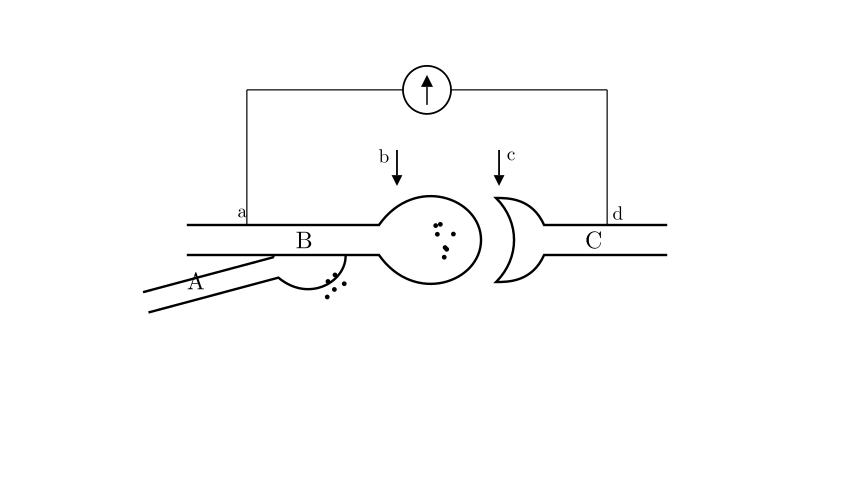
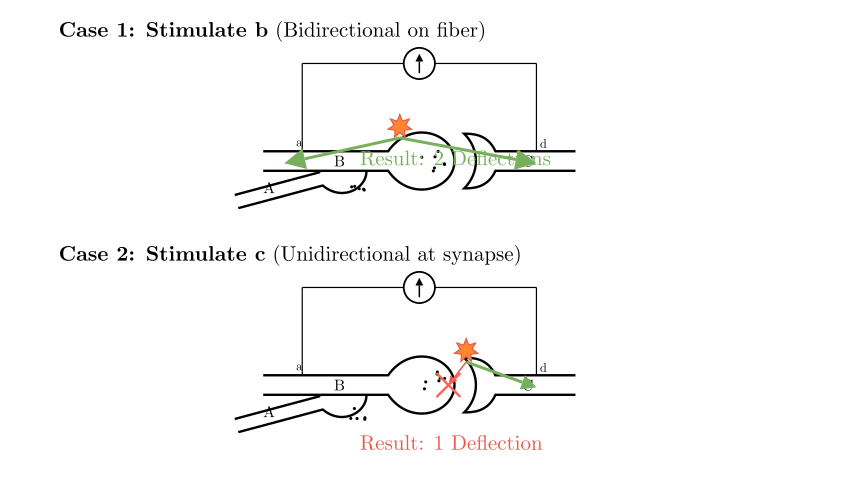
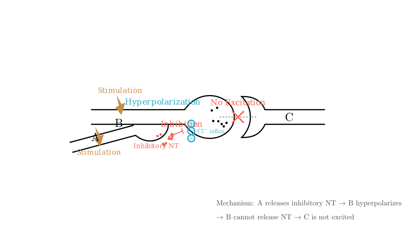

Problem Statement:
The figure illustrates the structure of synapses, with a sensitive galvanometer connected at points a and d to measure potential changes. Which of the following analyses is correct?
(1) The structure shown includes 3 neurons and contains 3 synapses. (2) When points b and c are stimulated respectively, the galvanometer pointer deflects twice in both cases. (3) If B is stimulated, C becomes excited; if A and B are stimulated simultaneously, C does not become excited. This implies A releases an inhibitory neurotransmitter. (4) Neurotransmitters can bind to "receptors" on the postsynaptic membrane, and the chemical nature of these "receptors" is glycoprotein. (5) A and B must be axons, while C could be a dendrite or an axon.
Options: A. ①③④ B. ②④ C. ①③⑤ D. ③④
Solution Approach: We will analyze the anatomical structure of the neurons to determine the number of synapses and the identity of the structures (axons vs. dendrites). Then, we will trace the path of electrical excitation to determine how the galvanometer responds to stimulation at different points. Finally, we will apply principles of synaptic physiology to understand the inhibitory effect described.

Step 1: Analyzing the Anatomical Structure (Statements ① and ⑤)
First, let's identify the components in the diagram to evaluate Statement ① ("3 neurons, 3 synapses") and Statement ⑤ ("A, B are axons").
Conclusion on Statement ⑤: Since A and B both contain vesicles for release, they function as presynaptic axon terminals. C is the postsynaptic target. Thus, Statement ⑤ is correct (though we must see if it fits the final options).
Counting Synapses: A synapse is the junction between two neurons.
Since Statement ① is false, we can eliminate options A and C.

Step 2: Analyzing Signal Transmission (Statement ②)
Statement ② claims that stimulating b and c will both cause the galvanometer to deflect twice. Let's trace the excitation paths:
Result: Two deflections.
Stimulation at point 'c' (on Neuron C):
Result: Only one deflection.
Conclusion on Statement ②: Since stimulating 'c' only causes one deflection, Statement ② is FALSE.
This eliminates option B. By elimination, the answer must be D. Let's verify the remaining statements.

Step 3: Analyzing Inhibition and Receptors (Statements ③ and ④)
Conclusion: Statement ③ is TRUE.
Statement ④ Analysis:
Final Verification: * Statement ①: False (2 synapses, not 3). * Statement ②: False (Stimulating 'c' leads to 1 deflection). * Statement ③: True (Inhibitory mechanism). * Statement ④: True (Receptor chemistry). * Statement ⑤: True (A and B are axons), but this statement is not part of the correct option combination (D). The question asks to select the correct analysis set, and option D (③④) contains only true statements without the false ones found in A, B, or C.
Final Answer: The correct statements are ③ and ④. The correct option is D.